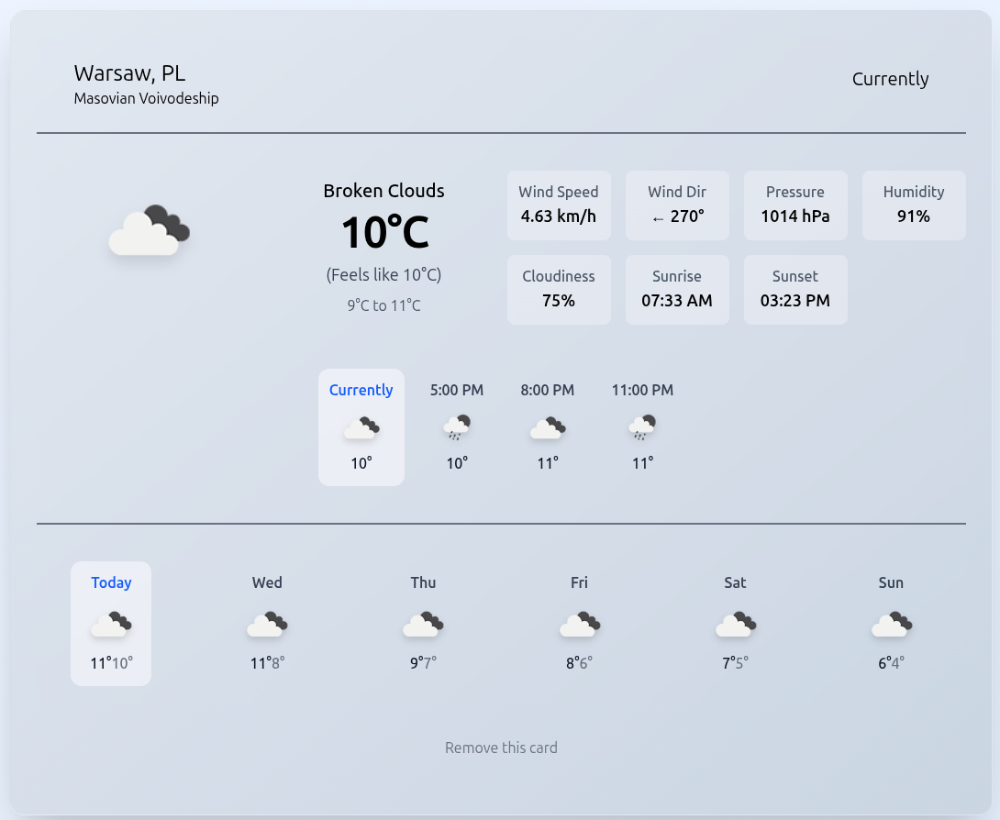
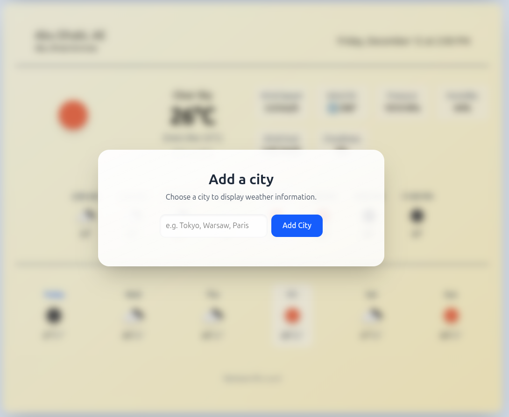
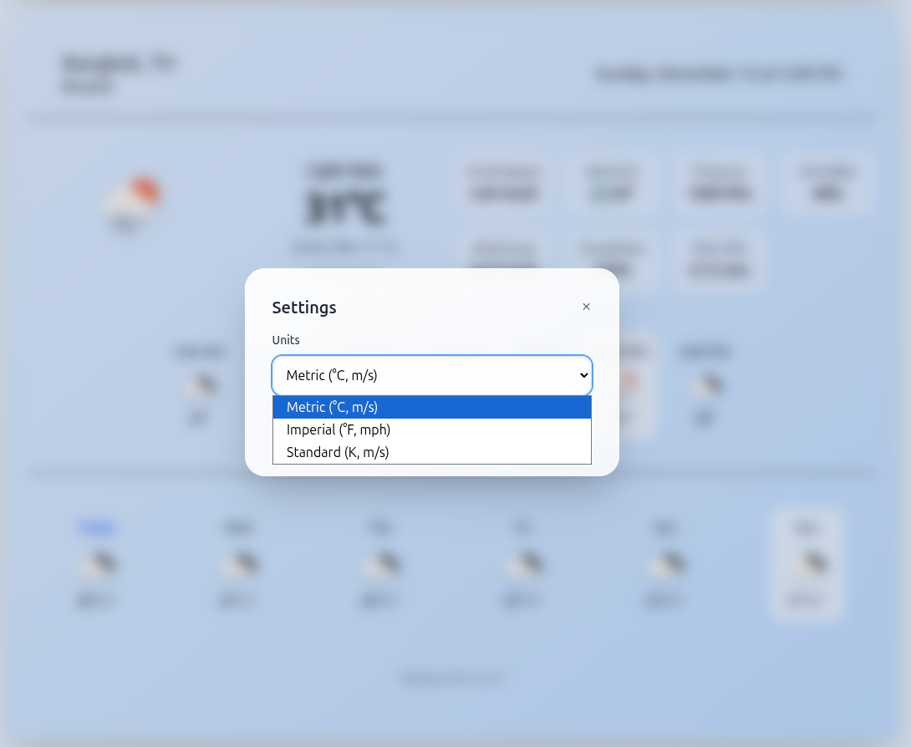
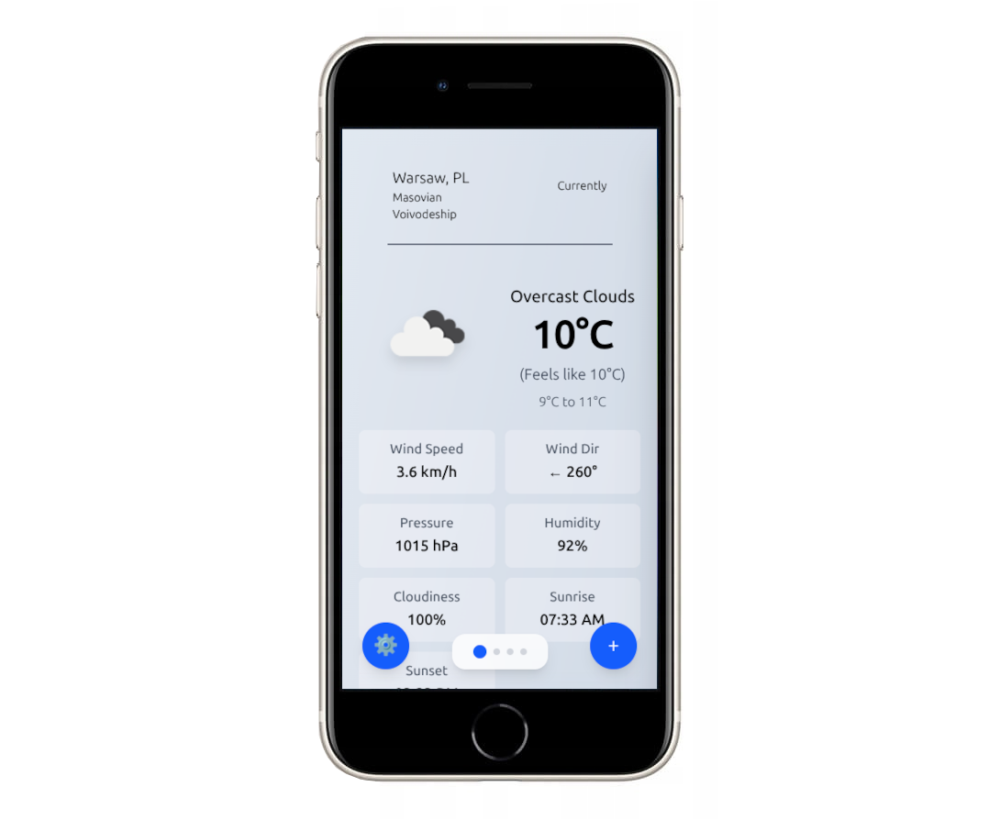

WeatherCards to serwis internetowy, umożliwiający użytkownikom szybkie sprawdzanie szczegółowych danych pogodowych. Osiąŋa to poprzez zastosowanie intuicyjnego interfejsu kart, który umożliwia przedstawianie danych dla wielu miast na jednej stronie.
Wykorzystane technologie:
- Vue 3
- Tailwind
- ASP.NET Core (minimal Web API)
W ramach pracy nad projektem:
Zaprojektowałem nowoczesny interfejs kartowy w Vue 3 i Tailwind CSS


Zaimplementowałem REST API stworzone na platformie ASP.NET z zarządzaniem ulubionymi miastami
Dodałem obsługę wielu stref czasowych dla różnych miast oraz systemów jednostek


Stworzyłem responsywny interfejs mobilny z obsługą gestów dotykowych